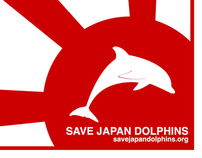
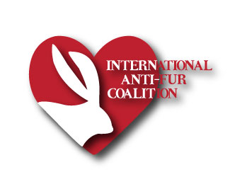

Organizations
- SaveJapanDolphins.org
In 2004, we started our Save Japan Dolphins campaign. Through our educational work in Japan, the number of people eating dolphin meat has dropped dramatically. When we started, about 1,600 dolphins were killed inTaiji every year. In the 2016-17 season, 595 were reportedly killed. The Academy Award–winning documentary, The Cove, depicts Earth Island Institute’s campaign in Taiji to stop the dolphin hunts. Recently, the World Association of Zoos and Aquariums, after 10 years of pressure, agreed to suspend the membership of any Japanese aquarium sourcing dolphins from Taiji. In response, Japan zoos and aquariums voted overwhelmingly to stop buying live dolphins from Taiji.
- International Anti - Fur Coaliation (IAFC)
The International Anti-Fur Coalition (IAFC) is an Animal Rights (AR) movement focusing on the atrocities of the fur trade in which at least billion rabbits and over 85 million other animals are brutally murdered every year for their fur. The IAFC was founded in 2006. The coalition consists of over 50 Anti-Fur organizations worldwide, that are working together to bring an end to the horror of the fur industry.We organize simultaneous “Global days of Action’; e.g.: Demonstrations, Marches, “Information days” and special events are held regularly all over the world. The fur trade is one of the cruelest industries in the world and in the age of internet there is NO excuse for wearing fur. Thank you for standing up and fighting for the animals. "They have only us; we cannot fail them". Though demonstrations are very effective to raise awareness, another necessary measure to achieve change is enacting laws – international bills to ban the sale of fur. Pushing for new legislation requires the backing of public opinion and support. For example, IAFC is leading the catalyst anti-fur bills in Israel, together with Members of the Knesset (parliament in Israel) and Animal Rights organizations.
Mission and Vision
Our ultimate goal is not only making fur history – a thing of the past, out of fashion and sight – but also out of law. Fur should be not only immoral but also illegal. Making fur illegal is an idea that should not sound surrealistic, as the world is evolving, whether furriers like it or not. It’s our duty to raise awareness, by giving a voice to animals, about the cruel and immoral fur industry. It' s our mission to convey the message that unless we change our attitude towards animals, our grandchildren would soon enough only be able to see furry animals in museums – not so unreal since every second, more than one animal is brutally killed for its fur simply for greed and a sick fashion.
- Save Ralph

Ralph-the-rabbit is a tester—one of untold thousands of rabbits and other animals used each year in government-required chemical-poisoning tests for cosmetics and their ingredients. “Save Ralph” combines empathetic storytelling with the magic of stop-motion animation and performances by an A-list multinational cast in the next phase of Humane Society International’s global campaign to outlaw cosmetic animal testing once and for all. With Taika Wititi are Ricky Gervais, Zac Efron, Olivia Munn, Pom Klementieff, and Tricia Helfer.
Mission and Vision
With your help, we are shaping the dialogue to catalyze animal welfare reform and influence public opinion, corporate priorities, legislative action and governmental collaboration.
Mission and Vision
The mission of Dolphin Project is to end dolphin exploitation and slaughter, as dolphins are routinely captured, harassed, slaughtered and sold into captivity around the world – all in the name of profit. Dolphin Project works not only to halt these slaughters, but also to rehabilitate captive dolphins for retirement and/or release, investigate and advocate for economic alternatives to dolphin slaughter, and to put a permanent end to dolphin captivity.